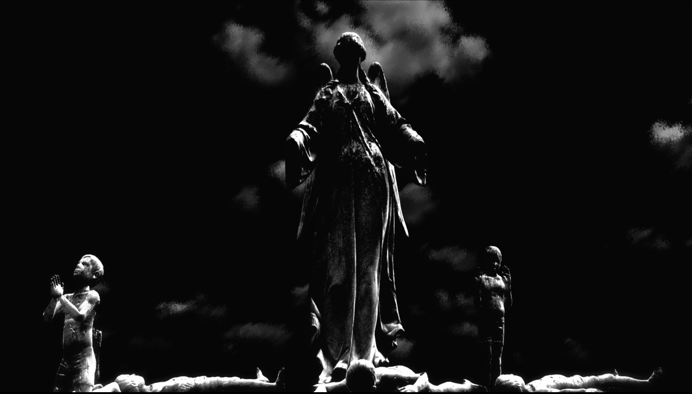
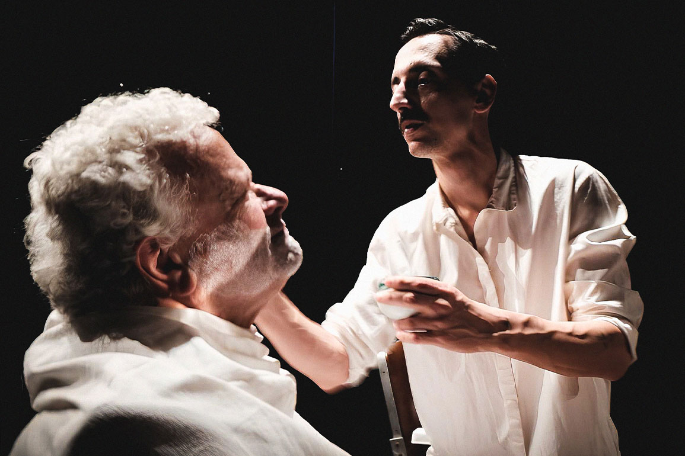
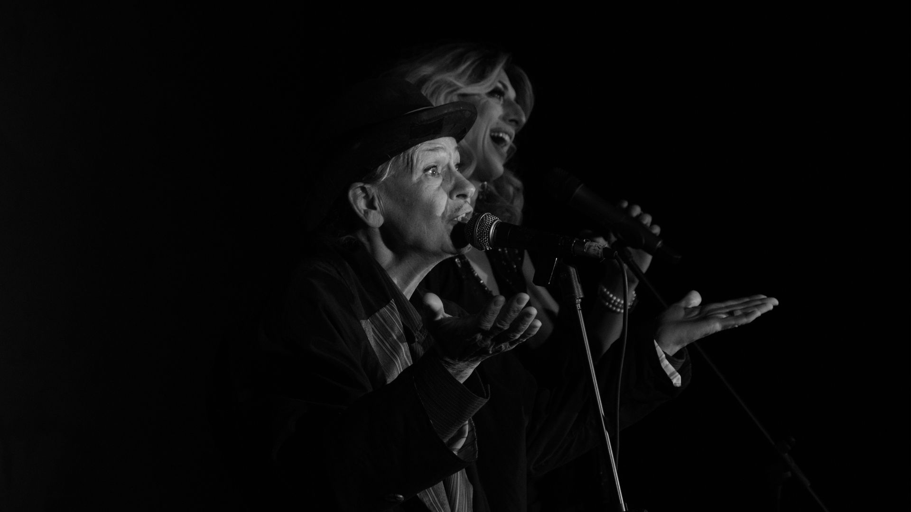
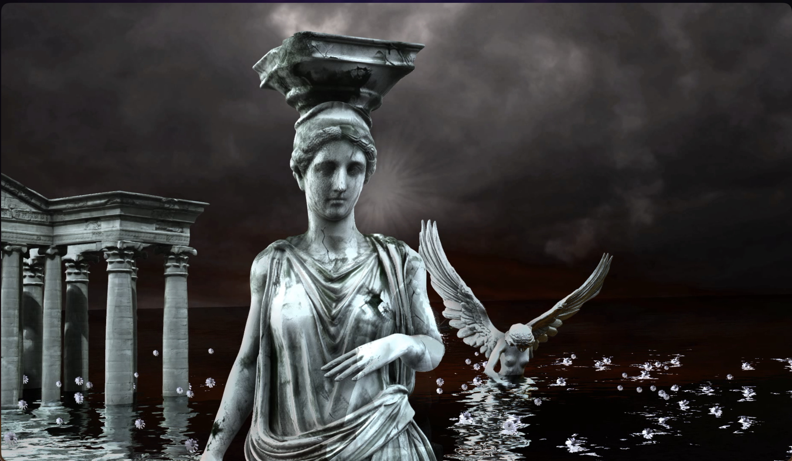
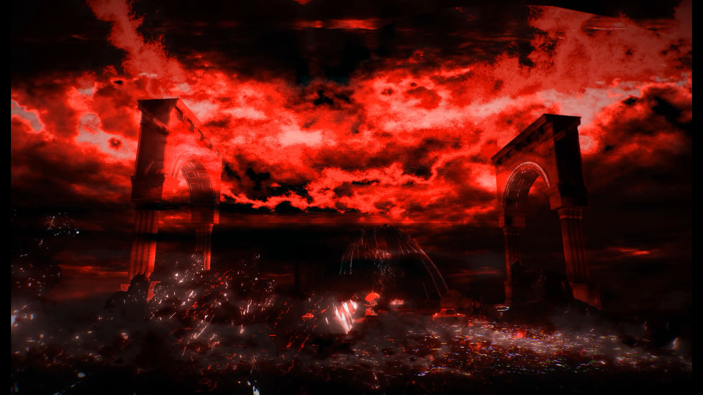
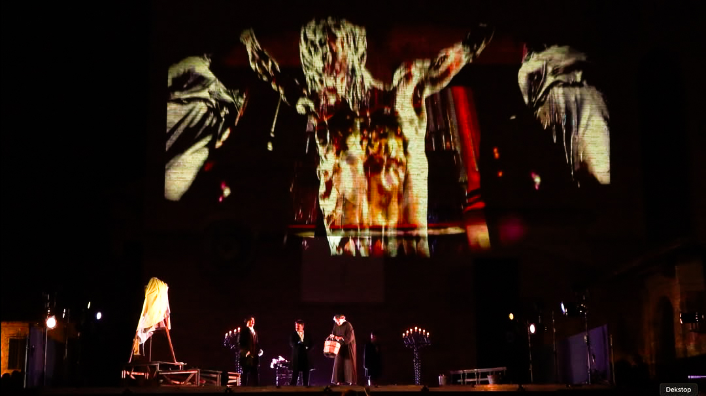
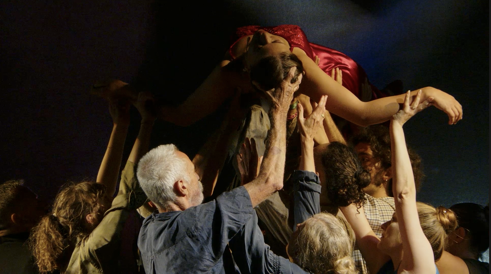
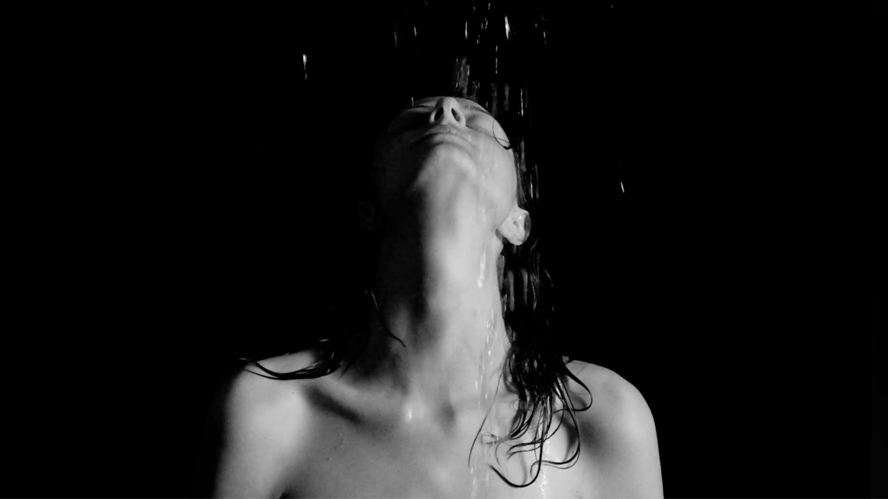
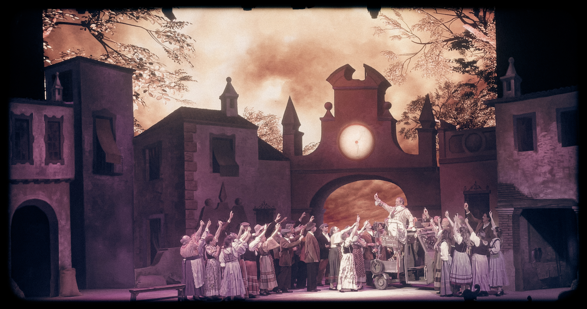

Lavori realizzati su commissione per teatri, festival e produzioni d'opera: scenografie video, regia e performance sviluppate in dialogo con il progetto di chi ci ha chiamato.

Progetto performativo tra devozione, verticalita dell'immagine e drammaturgia sonora contemporanea.

Performance fisica e politica sul tema del crollo, della resistenza e della riscrittura del gesto.

Percorso laboratoriale e produttivo nato dal lavoro di gruppo su attore, spazio e montaggio scenico.

Scenografia video per un'opera di forte impatto emotivo, con ambienti digitali stratificati.

Linguaggio scenografico mobile e ironico per sostenere il ritmo comico dell'opera pucciniana.

Versione scenica per il Festival dell'Opera di San Gimignano, in dialogo con la tradizione lirica.

Percorso site-specific nel borgo di Lari, tra spazio urbano, performance e immagine filmica.

Rilettura scenica contemporanea: fragilita sociale, poesia visiva e dispositivi performativi ibridi.

Impianto visivo leggero e dinamico che accompagna il carattere sentimentale e brillante dell'opera.